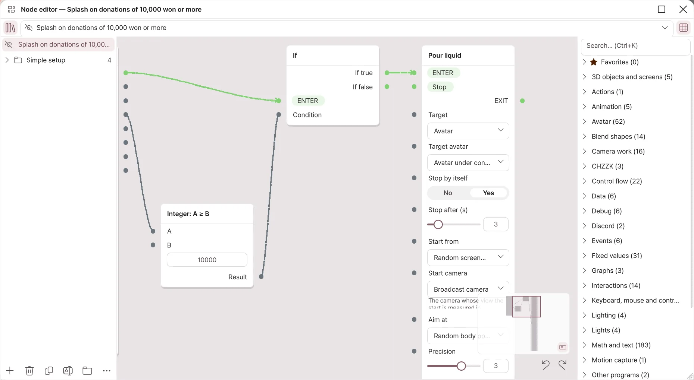
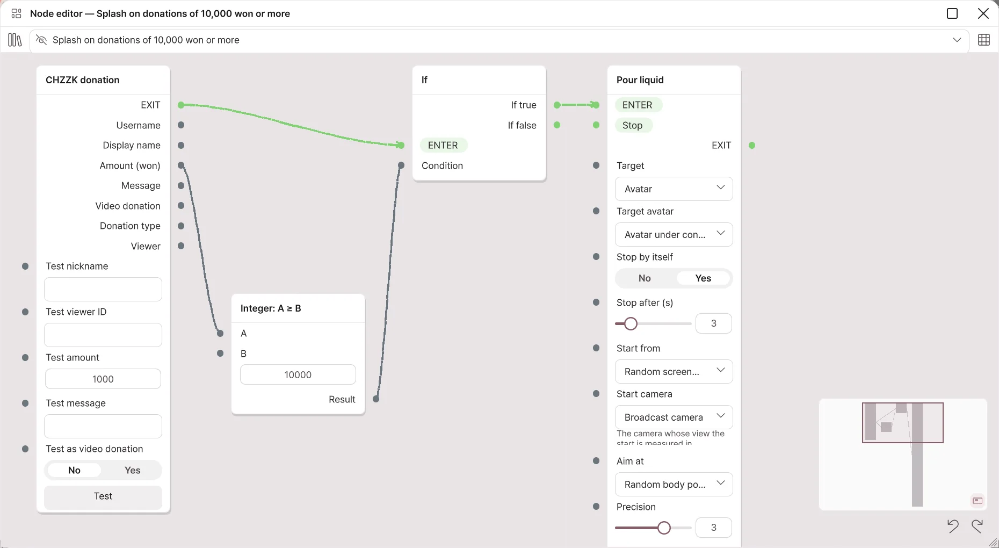

Node editor
New in 2.2.0; not available in 2.1.2 or earlier.
Connect nodes with lines to build "when this event arrives, under this condition, do this" yourself. Use it when Simple setup is not enough. Editing and running need Pro; on Basic you can only view, pan and zoom. It is a broadcast integration feature, so it is currently in beta.
How is it different from Simple setup?
| Simple setup | Node editor | |
|---|---|---|
| How you make it | Choose triggers and actions from a list. | Drag nodes in and connect them with lines. |
| What it can do | Set reactions such as throw, liquid, sticker, light and avatar actions | About 400 built-in nodes: math, variables, branches, loops, camera, lights, expressions, blend shapes, bones, keyboard, mouse, WebSocket and more |
| Good for | One reaction to one event | Mixing several conditions, or chaining reactions in order |
Simple setup items also run as graphs inside. Expand an item and press Open in the node editor… to see the graph that item made.
Opening the editor
- Open Broadcast → Interactions.
- Press Open node editor on the Node editor card.
- The editor window opens inside the app. Drag the title to move it, and drag the edges to resize it. Use the buttons at the top right to enlarge or close it.
The graphs stay and keep running after you close it.

| Where | What it does |
|---|---|
| Book icon at the top left | Shows or hides the graph list. |
| Choose a graph | Chooses the graph to edit. The eye icon turns a graph on and off. |
| Grid icon at the top right | Shows or hides the node list. |
| Buttons under the graph list | Add, delete, duplicate and rename graphs, make groups, and the ⋯ menu (Format layout, import and export). |
| Node list | Nodes by category. Search with Ctrl+K, and star a node to add it to Favorites. |
| Minimap | Shows the whole graph at the bottom right; click to go to that spot. |
| Undo, redo | Ctrl+Z, Ctrl+Y |
A new graph is made switched off. When it is finished, turn it on with the eye icon so it runs.
Nodes and links
- Drag a node from the node list onto the canvas to add it.
- Drag from a node's right dot (output) to another node's left dot (input) to connect them.
- Flow links (green lines) set the order things run in. They go from EXIT to ENTER.
- Value links (gray lines) pass values such as an amount or a name.
- Flow links and value links cannot be connected to each other. If you drop a link where it cannot go, the reason is shown.
- Right-click a node for the Delete, Duplicate and Disconnect all menu.
- For an input with no link, type the value directly in the field inside the node.
Example: pour water for a donation of 10,000 won or more

- Make a new graph with + in the graph list.
- From the CHZZK category in the node list, drag in CHZZK donation. When a donation arrives, the flow goes out of EXIT and the node outputs Amount (won) as a value.
- From the Math and text category, add Integer: A ≥ B, and connect the donation node's Amount (won) to A. Enter 10000 in B.
- From the Control flow category, add If. Connect the donation node's EXIT to its ENTER, and the comparison node's result to its condition.
- From the Interactions category, add Pour liquid, and connect If true of the If node to its ENTER.
- Turn the graph on with the eye icon.
- Enter 15000 in the donation node's Test amount and press Test to see that water is poured. Change it to 5000 and test again; it should not pour.
Every event node has test fields and a Test button, so you can try it without a broadcast. When the graph is off, tests do not run either.
When you edit a Simple setup item in the node editor
- The item is marked "Edited in the node editor", and it no longer makes the graph again. From then on, the graph decides what happens.
- Press Back to Simple setup in the item's menu to make the graph again from the item's settings. What you changed in the node editor is lost.
- If the nodes of an automatically made graph overlap, press Format layout in the ⋯ menu.
Sharing graphs
Use Export to clipboard in the ⋯ menu to copy a graph as text, and Import from clipboard or Import from file… to load one. Imported graphs come in switched off. Check the contents of a graph someone else gave you before you turn it on.